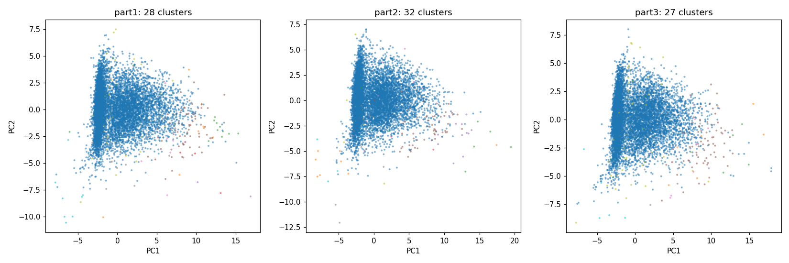
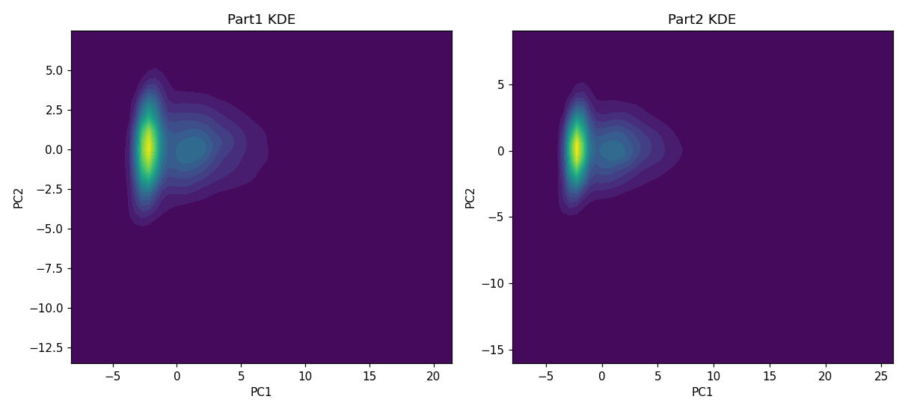

EDA · Stage 2 · Stage 3 · Stage 3e · Stage 4 · Boundary Discovery · Multivariate KDE
removal_rate,
excluded from construction throughout) to see where those markers concentrate.
V3_PLAN.md's START HERE section; reproducible via output/v3/flagged_accounts_part1.csv.
coappear_degree: +0.32n_comments_sample: +0.32n_distinct_posts_ctx: +0.32observed_span_days: +0.29subreddit_entropy: +0.28reception_spread: +0.28pc_n_comments_observed: +0.37pc_n_unique_commenters: +0.34low_tier_share: -0.28n_low_tier_subs: -0.22pc_log_subscribers: +0.22high_tier_share: +0.21n_posts_sample: +0.39is_submitter_rate: +0.35n_own_posts_with_comments: +0.32n_threads_with_repeat: +0.28domain_hhi: -0.27repeat_engagement_rate: +0.27sample_score_per_day_observed: +0.29pc_upvote_ratio: +0.29pc_contested_share: -0.29score_per_word: +0.24pc_is_self_rate: -0.24mean_post_score: +0.23low_tier_share: +0.42medium_tier_share: -0.39pc_tombstone_rate: -0.35n_low_tier_subs: +0.33pc_tombstone_rate_max: -0.27pc_bot_comment_rate: -0.25mean-shift (bin_seeding, auto bandwidth) in retained PCA space, capped fit sample 40000, full-part nearest-center assignment. Part1: 28 modes. Part2 (independent refit): 32 modes. Mean-shift and HDBSCAN disagree on exact cluster count — the joint-density structure is real but not fully settled.
| cluster | n | % of Part1 | removal_rate ratio | reception_spread ratio | botmarker_composite ratio |
|---|---|---|---|---|---|
| 24 | 57 | 0.0492% | 12.46× | 0.02× | 1.97× |
| 21 | 208 | 0.1794% | 12.32× | 0.08× | 1.79× |
| 27 | 51 | 0.0440% | 7.89× | 0.00× | 1.22× |
| 20 | 133 | 0.1147% | 3.91× | 1.27× | 1.60× |
| 22 | 289 | 0.2492% | 2.80× | 0.46× | 1.23× |
| 26 | 40 | 0.0345% | 1.80× | 0.00× | 0.88× |
| 19 | 36 | 0.0310% | 1.72× | 1.45× | 1.51× |
| 17 | 92 | 0.0793% | 1.09× | 1.25× | 1.45× |
| 15 ← overlaps AND-rule at 18× | 1,116 | 0.9625% | 0.71× | 4.26× | 1.77× |
Population baseline removal_rate = 0.0696. Top-5 enriched clusters replicate independently in Part2 too (see script log / JSON for the full Part2 table).
Re-derived Part1 AND-rule flagged count: 550 (reported: 550 — exact match, split is fully reproducible).
| cluster | share of AND-rule-flagged accounts | share of overall Part1 |
|---|---|---|
| 0 | 74.00% | 97.21% |
| 15 | 17.45% | 0.96% |
| 3 | 1.82% | 0.07% |
| 20 | 1.27% | 0.11% |
| 23 | 1.09% | 0.57% |
| 17 | 1.09% | 0.08% |
| 8 | 0.91% | 0.06% |
| 1 | 0.91% | 0.09% |
| 22 | 0.55% | 0.25% |
| 11 | 0.36% | 0.04% |
| 10 | 0.18% | 0.02% |
| 13 | 0.18% | 0.00% |
| 4 | 0.18% | 0.02% |
Cluster 15 holds 17.45% of the AND-rule-flagged group vs. 0.96% of the overall population — an 18× concentration. Two independently-built methods partially agree on the same subset of accounts, which is exactly why that overlap group was prioritized in the manual verification above.

